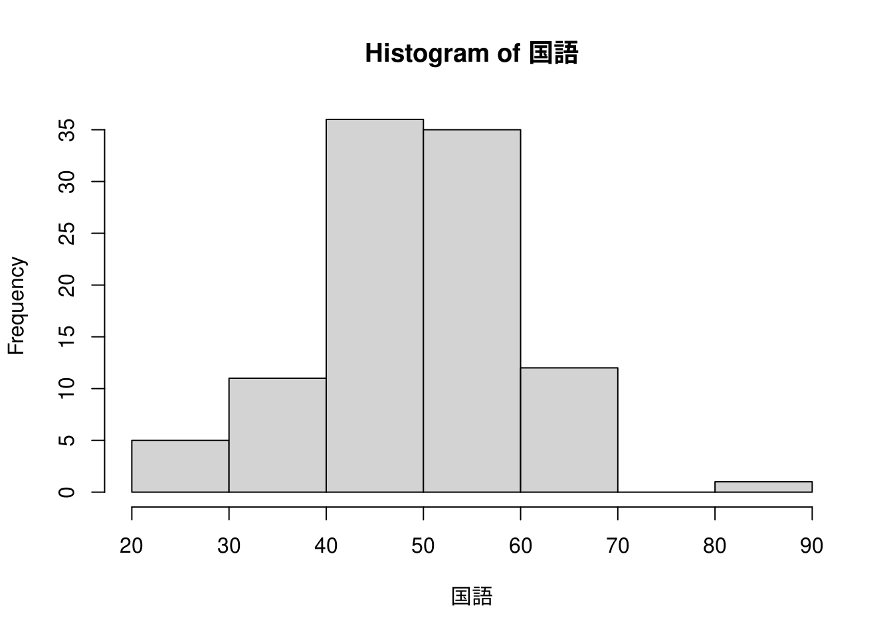
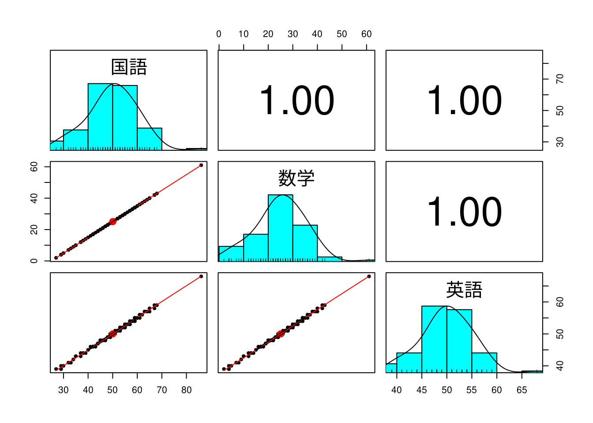

三教科の得点表
x <- "./data/Pre_P20_演習1.csv" %>%
read.csv()
x %>% df_print()本講はテキストの概観に関する第一回講義における演習をRで解答したものです。テキストとは異なるデータを利用しており演習自体やデータの著作権は講義担当者にあります。
x <- "./data/Pre_P20_演習1.csv" %>%
read.csv()
x %>% df_print()
データの分布傾向を見るには箱ひげ図が便利です。Rで箱ひげ図を描くにはboxplot()関数を用います。
boxplot(x)
箱ひげ図は五数要約の値を箱とひげ（whisker）で表現したもので、boxplot()関数の場合は外れ値（outliers）が描かれます。五数要約は下表のようなもので、上から最小値、第一四分位値（25%点）、中央値・第二四分位値（50%点）、第三四分位値（75%点）、最大値となっています。
x %>%
dplyr::summarise(dplyr::across(.cols = dplyr::everything(),
.fns = fivenum)) %>%
df_print()
箱ひげ図からは以下のような特徴がうかがえます。
箱ひげ図はデータを要約した結果を図示したものですので、もう少し細かい分布を見るにはヒストグラム（度数分布表）が便利です。Rではhist()関数を用いて描きます。


ヒストグラムで見ると以下のような特徴がうかがえます。
教科間の得点の関係をみるには散布図行列が便利です。Rではpairs()関数が標準関数として用意されていますが、ここではpsychパッケージのpsych::pairs.panels(x)関数を用います。
psych::pairs.panels(x)
散布図行列で見ると以下のような特徴がうかがえます。
グループ演習1のデータを用いて基本統計量を求めます。最初は平均値です。Rで平均値を求めるにはmean()関数を用います。
x %>%
dplyr::summarise(dplyr::across(dplyr::everything(), mean)) %>%
df_print()
参考として中央値も求めてみます。中央値はmedian()関数で求めます。
x %>%
dplyr::summarise(dplyr::across(dplyr::everything(), median)) %>%
df_print()
次に分散（母分散）を求めます。Rには母分散を求める関数がありませんので、本資料では計算式（\(\frac{\sum{(x_i - \mu)^2}}{n} = \sigma^2\)）をVAR()関数として定義しています。
x %>%
dplyr::summarise(dplyr::across(dplyr::everything(), VAR)) %>%
round(digits = 1) %>%
df_print()
分散を求めましたので標準偏差（母標準偏差）を求めますが、母分散同様に求める関数がありませんので本資料では計算式（\(\sqrt{\frac{\sum{(x_i - \mu)^2}}{n}} = \sigma\)）をSD()関数として定義しています。
x %>%
dplyr::summarise(dplyr::across(dplyr::everything(), SD)) %>%
round(digits = 1) %>%
df_print()
最後に変動係数（ばらつきを比較するための値）を求めます。
x %>%
dplyr::summarise(dplyr::across(dplyr::everything(),
function(x = .) {SD(x)/mean(x)} )) %>%
round(digits = 2) %>%
df_print()
以上の基本統計量より
したがって
基本統計量をまとめて計算するにはskimrパッケージのskimr::skim()関数が便利です。ただし、求められる標準偏差は母標準偏差の推定量です。
skimr::skim(x) %>%
df_print()
層別のヒストグラムを描くにはggplot2パッケージが便利です。ここでは階級幅を\(10\mbox{点}\)としています。
x %>%
tidyr::pivot_longer(cols = dplyr::everything(),
names_to = "教科", values_to = "得点") %>%
dplyr::mutate(教科 = forcats::fct_inorder(教科)) %>%
ggplot2::ggplot(ggplot2::aes(x = 得点, fill = 教科)) +
ggplot2::geom_histogram(breaks = seq(0, 100, 10), alpha = 0.5) +
ggplot2::facet_grid(rows = dplyr::vars(教科))
Microsoft Excel（2016以降）ではヒストグラムを描くことができますが、グラフ表示の調整には制限があります。Excelでヒストグラム間の比較を行いたい場合は小池方式のテクニックを使う必要がありますが、他のツールでは調整が可能です。
| ツール名 | 階級幅 | 階級（横軸） | 度数（縦軸） | 閉じ1 |
|---|---|---|---|---|
| Microsoft Excel(365) | 調整可 | 調整不可 | 調整不可 | 調整不可 |
| Google Spreadsheet | 調整可 | 調整可 | 調整可 | 調整不可 |
| Base R (hist) | 調整可 | 調整可 | 調整可 | 調整可 |
| R/Tidyverse (ggplot2) | 調整可 | 調整可 | 調整可 | 調整可 |
1 閉じとは階級の境界にあたるデータの処理方法です。\(a < x \le b\)を右閉じ、\(a \le x < b\)を左閉じといい、右閉じが主流です。
| 統計量 | 国語 | 数学 | 英語 | 備考 |
|---|---|---|---|---|
| 平均 | 50 | 25 | 50 | |
| 分散 | 101 | 101 | 26 | 母分散 |
| 標準偏差 | 10 | 10 | 5 | 標準偏差の推定値 |
| 変動係数 | 0.20 | 0.40 | 0.10 | |
| 中央値 | 50 | 25 | 50 | 第二四分位値（参考） |
x %>%
tidyr::pivot_longer(cols = dplyr::everything(),
names_to = "教科", values_to = "得点") %>%
dplyr::mutate(教科 = forcats::fct_inorder(教科)) %>%
ggplot2::ggplot(ggplot2::aes(x = 得点, fill = 教科)) +
ggplot2::geom_histogram(breaks = seq(0, 100, 10), alpha = 0.5) +
ggplot2::facet_grid(rows = dplyr::vars(教科)) +
ggplot2::geom_vline(xintercept = 30, colour = "red", size = 0.25)
上記より30点という得点は以下のように判断できます。
また、以下のようなことも推測できます。
対象データは下記の通り。
x <- "./data/Pre_P37_個人演習.csv" %>%
read.csv()
x %>% df_print()
Zスコアと偏差値を算出して成績の良い順に並べる。
Zスコアから相対順位（上位\(%\))を求める。
x <- "./data/Pre_P53_2群のデータ.csv" %>%
read.csv()
x %>% df_print()"./data/Pre_P52_4パターン.csv" %>%
read.csv() %>%
ggplot2::ggplot(ggplot2::aes(x = Group, y = Value, colour = Group)) +
ggplot2::geom_jitter(position = "dodge") +
ggplot2::facet_grid(~ Pattern)Warning: Width not defined. Set with `position_dodge(width = ?)`
グラフから結果を予想するにあたり、データの分布が見やすい箱ひげ図を描いておきます。
"./data/Pre_P52_4パターン.csv" %>%
read.csv() %>%
ggplot2::ggplot(ggplot2::aes(x = Group, y = Value, colour = Group)) +
ggplot2::geom_boxplot(position = "dodge") +
ggplot2::facet_grid(~ Pattern)\[\mbox{パターン2} < \mbox{パターン1}\]
\[\mbox{パターン2} < \mbox{パターン4}\]
\[\mbox{パターン2} < \mbox{パターン3}\]
\[\mbox{パターン3} < \mbox{パターン4}\]
\[\mbox{パターン4} < \mbox{パターン1}\]
したがって、4パターンのp値の関係は以下と推測できる。
\[\mbox{パターン2} < \mbox{パターン3} < \mbox{パターン4} < \mbox{パターン1}\]
Rで二群の平均値の差の検定を行うにはt.test()関数を用います。
Two Sample t-test
data: Value by Group
t = -1.5492, df = 16, p-value = 0.1409
alternative hypothesis: true difference in means between group A and group B is not equal to 0
95 percent confidence interval:
-0.4736786 0.0736786
sample estimates:
mean in group A mean in group B
1.0 1.2
Two Sample t-test
data: Value by Group
t = -3.0984, df = 16, p-value = 0.006903
alternative hypothesis: true difference in means between group A and group B is not equal to 0
95 percent confidence interval:
-0.3368393 -0.0631607
sample estimates:
mean in group A mean in group B
1.0 1.2
Two Sample t-test
data: Value by Group
t = -2.26, df = 34, p-value = 0.03034
alternative hypothesis: true difference in means between group A and group B is not equal to 0
95 percent confidence interval:
-0.37984565 -0.02015435
sample estimates:
mean in group A mean in group B
1.003889 1.203889
Two Sample t-test
data: Value by Group
t = -2.0927, df = 6, p-value = 0.08129
alternative hypothesis: true difference in means between group A and group B is not equal to 0
95 percent confidence interval:
-0.43384763 0.03384763
sample estimates:
mean in group A mean in group B
1.0 1.2 "./data/Pre_P52_4パターン.csv" %>%
read.csv() %>%
dplyr::group_by(Pattern) %>%
tidyr::nest() %>%
dplyr::mutate(out = purrr::map(.x = data,
.f = ~ with(.x, t.test(Value ~ Group,
var.equal = TRUE) %>%
broom::tidy()))) %>%
tidyr::unnest(out) %>%
dplyr::select(Pattern, p.value, t.value = statistic) %>%
dplyr::arrange(p.value) %>%
dplyr::left_join(x, by = c("Pattern" = "パターン")) %>%
df_print()
ツール導入前後の欠陥密度データです。データ間に対応はありません。
"./data/Pre_P13_ツールを導入すべきか.csv" %>%
read.csv() %>%
df_print()
欠陥密度の平均値の差は\(0.5\)なので約\(17\%\)改善していることになります。
"./data/Pre_P13_ツールを導入すべきか.csv" %>%
read.csv() %>%
dplyr::summarise(dplyr::across(dplyr::everything(), mean)) %>%
df_print()
ツール導入前後の欠陥密度に優位な差があるかをt検定で検証します。なお、両者のデータは等分散であると仮定、有意水準は\(5\%\)とします。
Two Sample t-test
data: 導入前 and 導入後
t = 2.0761, df = 8, p-value = 0.07154
alternative hypothesis: true difference in means is not equal to 0
95 percent confidence interval:
-0.05535934 1.05535934
sample estimates:
mean of x mean of y
3.0 2.5 p値が有意水準を下回らないので、帰無仮説は棄却できず有意な差がある（二群の平均値の差が\(0\)でない）とは言えない。したがって、このデータからはツール導入の効果は見込めない。ただし、p値からみてデータ数を増やして再検定すれば有意になる可能性があるかも知れない。
"./data/Pre_P13_ツールを導入すべきか.csv" %>%
read.csv() %>%
tidyr::pivot_longer(cols = dplyr::everything(),
names_to = "type", values_to = "value") %>%
ggplot2::ggplot(ggplot2::aes(x = type, y = value, colour = type)) +
ggplot2::geom_jitter(position = "dodge")Warning: Width not defined. Set with `position_dodge(width = ?)`